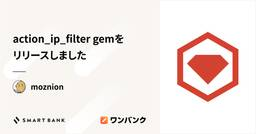

inSmartBank
https://blog.smartbank.co.jp/
AI家計簿アプリ「ワンバンク」を開発・運営する株式会社スマートバンクの Tech Blog です。より幅広いテーマはnoteで発信中です https://note.com/smartbankinc
フィード

action_ip_filter gemをリリースしました 4
4
inSmartBank
こんにちは。スマートバンクでソフトウェアエンジニアをしております @moznion です。 表題の通り、action_ip_filterというgemを公開いたしましたのでそのご報告です。 これは何 / モチベーション Ruby on RailsのController内の個別のactionに対し、アクセス元IPアドレスによるアクセス制限を課すことができるgemです。 例えば以下のように使うことができます: class AdminController < ApplicationController include ActionIpFilter::IpFilterable filter_ip "19…
5日前

YAPC::Fukuoka 2025で株式会社スマートバンクの社員と握手 #yapcjapan
inSmartBank
こんにちは、nyancoです。 いよいよ明日からYAPC::Fukuoka 2025ですね！準備はできてますか〜?? ということで、今日はYAPC::Fukuoka 2025での弊社の取り組みを紹介します！ 株式会社スマートバンクはPlatinumスポンサーとして協賛させていただきます 昨年に引き続き、スポンサーさせていただいております！ smartbank.co.jp 登壇者なんと5人！ 公募でのトークが3名、U29セッションでのトークが2名と大盛り上がりです。それぞれコメントをもらってきました。 「データ無い！腹立つ！推測する！」から「データ無い！腹立つ！データを作る」へ ― ゼロからデー…
24日前
Kaigi on Rails 2025にオーガナイザーとして参加しました
inSmartBank
こんにちは！サーバーサイドエンジニアで、元電車の運転士のnissyiです。あっという間に10月ですね！………えっ、もう11月？時間が経つのは本当に早いですね？？？（って書いてたらRubyWorld Conferenceも終わってしまった……！！） 2025年9月26日、27日に開催されたKaigi on Rails 2025にオーガナイザーとして参加しました。今回は、オーガナイザーとしてどの様なことに取り組んでいたかを振り返ります。 今回のKaigi on Railsには会社からの支援を受け、前日の準備から業務として参加してきました。他の参加メンバーによるレポートはこちらをご覧ください。 bl…
25日前
面倒な一次調査はDevinにお任せ！Devin MCPとn8nで作る、CS問い合わせ一次調査Bot
inSmartBank
こんにちは。エンジニアのtanihiroです。 株式会社スマートバンクが運営しているワンバンクでは、日々様々なお問い合わせがユーザーから寄せられます。届いたお問い合わせはCSチームが対応していますが、中にはエンジニアに確認しないと回答が難しいものもあります。 そのようなケースでは、CSチームから顧客体験チームのエンジニアへエスカレーションする体制が整えられています。Slackワークフローで調査依頼をテンプレート化し、担当エンジニアが調査して回答する流れが確立されています。 実際のSlackワークフロー しかし、この調査作業が結構たいへんなのです。 今回は、この一次調査を自動化するために、Dev…
2ヶ月前
Kaigi on Rails 2025 セッションレポート #kaigionrails
inSmartBank
2025/9/26-27に開催されたKaigi on Rails 2025に、株式会社スマートバンクはゴールドスポンサーとして協賛し、登壇者3名を含む計21名で参加しました。 今回のブログでは、最近入社したメンバーを中心に、それぞれの視点から見たKaigi on Railsの模様をお届けします。セッションをはじめ普段なかなか会う機会のない他社のエンジニアの皆さんと直接交流できたことは、私たちにとって大きな収穫となりました。どうぞご覧ください！ stefafafan すてにゃん (id:stefafafan) からはMasayoshi Takahashi氏による「Railsアプリケーション開発者…
2ヶ月前
iOSDC Japan 2025に参加しました！登壇・参加メンバーふりかえり対談
inSmartBank
はじめに みなさんこんにちは！ワンバンクアプリのiOSを担当している上ちょです。DroidKaigi に続きモバイルエンジニアのメンバーとiOSDC Japan 2025に業務として参加してきました！ 今回は弊社から2名採択されたこともあり、いつも以上に盛り上がりを見せた会となりました。参加したメンバーが気になったセッションやイベントの感想など、ざっくばらんに会話した内容をお届けします 👏 セッションの感想など ――iOSDC Japan 2025 参加お疲れ様でした！特に印象に残ったセッションやイベントなど聞いていきたいなと思うんですが、皆さんは今回のカンファレンスどうでしたか？ rockn…
2ヶ月前
【KoRブース裏企画】Rails in 1.44MB Challenge #kaigionrails_fd0
inSmartBank
こんにちは、osyoyu です。いよいよ明日がKaigi on Rails本番ですよ！ むっちゃドキドキしてきた……。 株式会社スマートバンクではとっても面白い企画をご用意してみなさまをお待ちしています。 以下は3人ぐらい参加してくれたらいいなと思っている企画の告知です。株式会社スマートバンクの本企画ではなくosyoyuの趣味です。 Rails in 1.44MB Challenge Rails一式をフロッピーディスク（1.44MB）に収めてください。会場でフロッピーディスクに書き込んで動かしてプレゼントします！ Railsは結構でっかいフレームワークです。依存しているGemを全部足しあげると…
2ヶ月前
Kaigi on Rails 2025の株式会社スマートバンク取り組みまとめ #kaigionrails
inSmartBank
こんにちは、nyancoです。 いよいよ明日からKaigi on Railsということで！今回は直前まとめブログと題して、株式会社スマートバンクのKaigi on Rails 2025に関するトピックスをまとめて紹介します。 ゴールドスポンサーとして協賛しています 今年もKaigi on Railsにゴールスポンサーとして協賛させていただきます。Kaigi on Railsは初めて協賛した技術カンファレンスで、今年も協賛できて大変嬉しいです。 smartbank.co.jp 登壇者が3名います Kaigi on Railsで5年連続5回目の複数社員の登壇となります！今回はmoznionさん、o…
2ヶ月前
Kaigi on Rails 2025にohbarye,moznion,mitaniが登壇します！ #kaigionrails
inSmartBank
こんにちは、nyancoです。 いよいよ今週末にKaigi on Rails 2025が開催されます！ 本日はKaigi on Rails 2024で登壇する株式会社スマートバンク社員3名（ohbaryeさん、moznionさん、mitaniさんが登壇します。）に登壇の意気込みや見どころについて聞いてきたのでブログにしてみます。 5年間のFintech × Rails実践に学ぶ - 基本に忠実な運用で築く高信頼性システム by ohbarye 日時：Day 1（202509/26） 16:10 〜 16:40 @ Hall Red 予告編の内容は、実際に上映される本編とは違うことがあります o…
2ヶ月前
DroidKaigi 2025に株式会社スマートバンクのモバイルエンジニア全員で参加しました！
inSmartBank
みなさんこんにちは！ワンバンクアプリのiOSを担当している 上ちょ です。今回、株式会社スマートバンクのモバイルエンジニア全員にて DroidKaigi 2025 に業務として参加してきました！ 参加したメンバーが気になったセッションなど、ざっくばらんに会話した内容をお届けます セッションの感想など ――DroidKaigi 2025 参加お疲れ様でした！特に印象に残ったセッションやイベントなど聞いていきたいなと思うんですが、皆さんは今回のカンファレンスどうでしたか？ nakamuuu： 今回も株式会社スマートバンクのモバイルエンジニア全員でカンファレンスに参加してきました。去年からメンバーも…
3ヶ月前
投資委員会ではAIツールの利用促進と検証をお金と制度でサポートします
inSmartBank
こんにちは！株式会社スマートバンクでサーバーサイドエンジニアをしているhiroteaです。 この4月から、社内AI推進を行う委員会「投資委員会」に所属し、社内のAIツール利用推進や補助、環境整備に取り組んでいます。 AI系開発ツール、毎週のように新しいものが出ていますよねぇ… 新しく出たものはひとまず触ってみることにしているのですが、大体は素敵なお値段がします。 今回のブログでは、「投資委員会」がそんなAI開発ツールをバンバン試せる環境を整えている話とちゃんと利用状況分析しているよ、という話をしようかと思います。 具体的に紹介すること 月250ドルの個人補助で安心してAIツールの検証・利用がで…
3ヶ月前
株式会社スマートバンクからDroidKaigiとiOSDCに3名登壇します！
inSmartBank
今年も DroidKaigi と iOSDC Japan の開催が近づいてきましたね。 弊社株式会社スマートバンクからは、両カンファレンス合わせて3名のエンジニアが登壇させていただきます。 各セッションの見どころと登壇情報をまとめてご紹介します！
3ヶ月前
エンジニアとしての自分の殻を破るため、株式会社スマートバンクに入社しました
inSmartBank
こんにちは！2025年6月にサーバーサイドエンジニアとして入社しました、occhiです。 早いもので入社から約3ヶ月が経ち、日々の業務にも慣れてきたところです。今回は入社エントリーとして、これまでのキャリアや株式会社スマートバンクへの転職理由、入社後の所感について書いていきたいと思います。 これまでのキャリアについて 新卒で株式会社GA technologiesに入社し、イタンジ株式会社に出向して不動産賃貸のSaaSのバックエンドとフロントエンド開発に携わりました。ITANDI 賃貸管理 基幹システムセット（旧：イタンジ管理クラウド）という賃貸不動産業界向けの業務効率化サービスの立ち上げから関…
3ヶ月前
eKYCの現状と今後のトレンド
inSmartBank
こんにちは、6月に業務委託から株式会社スマートバンクに正式入社した、サーバーサイドエンジニアの toshimaru です。 株式会社スマートバンクの開発チームに参画して間もない頃、聞き慣れず戸惑った言葉の１つとして eKYC（オンライン本人確認）方式の名称があります（ホ方式、ワ方式など）。 本記事では、私がわからなかったこの eKYC の方式および今後のeKYCのトレンドについて解説したいと思います。 なぜeKYCする？ eKYCの方式まとめ ホ方式 新ホ方式（2027年4月〜） ワ方式 ワ方式からカ方式、そしてヲ方式に？ ル方式 JPKI方式と比較してのメリット 今後のeKYCのトレンド 📣…
3ヶ月前
モバイルアプリ部の委員会制度についての紹介
inSmartBank
こんにちは、モバイルアプリ部のkanekoです。 今回は、モバイルアプリ部で新たに導入した「委員会制度」について紹介します。 これまでのモバイルアプリ部 昨年末にモバイルアプリ部について紹介した記事でも紹介しましたが、弊社では「ミッションチーム」と呼ばれるマトリクス型の組織体制を採用しており、すべてのモバイルエンジニアはミッションチームに所属し、日々の開発を行ってきました。 モバイルアプリ部として横串の活動も行ってはいたものの、ミッションチームでの施策の優先度が高く、部として取り組みたい活動には十分な時間を割けない状況が続いていました。特にモバイルエンジニアの人数が限られていたため、複数のチー…
3ヶ月前
受電待機を月136時間削減 株式会社スマートバンクの電話一次対応自動化プロジェクト
inSmartBank
はじめに こんにちは、株式会社スマートバンクのTakaoです。 私はカスタマーサポート部に所属し、主に不正モニタリングを管理しています。 また、カスタマーサポート部の一員として、クレジットカード会社や警察など法人からの受電対応業務の効率化にも取り組んでいます。 本ブログでは、私が入社1か月目から”Good First Issue”の一環として取り組んだ 電話一次対応の自動化について、その背景、導入までのプロセス、そして得られた成果をご紹介します。 “Good First Issue”については下記の記事をご参照ください！ 株式会社スマートバンクのオンボーディング文化と、それを支える "Good…
3ヶ月前
将来を見据えて管理画面のフロントエンドをガッと改善している
inSmartBank
こんにちは、株式会社スマートバンクでサーバーサイドエンジニアをやっています、すてにゃん (id:stefafafan:detail) です。今回は社内で活用している管理画面に対して実施した様々な技術的な改善を紹介していきます。
3ヶ月前
2025年1月〜6月エンジニア登壇・スポンサーまとめ
inSmartBank
こんにちは、サーバーサイドエンジニアのkoshibaです。 株式会社スマートバンクでは、エンジニアに限らず全社的に「発信」を応援する文化があります。私も広報委員会として、社内外への発信支援活動をしています。毎月の登壇者情報は毎月noteでもお伝えしていますが、「どんな発表をしたのか資料がまとめて見られるページがあると嬉しい」という社内の声を受け、今回ブログとして公開することにしました。 ぜひ興味のあるセッションを見つけてみてください。いざまとめてみるとかなりの数になったので、まずは半年分を公開します！ 登壇 1/17-18 東京Ruby会議12 1/20 Beyond EM 〜広がる可能性、深…
4ヶ月前
RidgepoleによるDBスキーマの宣言的定義に移行して便利になりました（ちょっと高速化もしました）
inSmartBank
こんにちは osyoyu です。このたびワンバンクを支える本体アプリケーション、通称core-apiのデータベーススキーマ管理をRidgepole (ridgepole/ridgepole) に置き換えて、人生が便利になりました。悲願達成です。 本記事では導入にあたっての工夫をご紹介します。高速化のためにやったことも最後に書いているので、すでに宣言的ライフを送られている皆様もぜひどうぞ。 まずはワンバンクの本体アプリケーションにおける、最新の rails stats をご覧ください。 +----------------------+--------+--------+---------+---…
4ヶ月前
EMひとりあたり3名体制？ー株式会社スマートバンクに入社して驚いた組織の特徴3つ
inSmartBank
こんにちは。2025 年 4 月に株式会社スマートバンクにエンジニアリングマネージャー(EM)として入社した kaoru です。顧客体験と不正対策という 2 つのチームを担当しています。約 4 か月とある程度まとまった時間が経ちましたので、入社して驚いたこと 3 つを紹介します。 EM ひとりあたりエンジニア 3 名から 4 名という体制 最初に驚いたのは、EM がサポートするメンバーの数がとても少ないことでした。株式会社スマートバンクを含め 3 社でマネージメントをやってきましたが、過去の会社では一人のマネージャーが十数人を見ていることも珍しくありませんでした。それに対し、株式会社スマートバ…
4ヶ月前
SentryのAlert Best Practicesを参考にアラート疲れから脱却する
inSmartBank
こんにちは、株式会社スマートバンクでサーバサイドエンジニアをしているnagasawaです。 皆さんアプリケーションのエラートラッキングを何かしらのツールで行っていると思いますが、日々多くのアラートが届き以下のような悩みをお持ちではないでしょうか。 どれが今すぐ確認すべきアラートなのか見分けがつけにくい 件数が多く対応状況が把握しづらい アラートがオオカミ少年に近い状態になっており、重要なアラートが見逃されてしまうことがある 下図のように、株式会社スマートバンクでも多い日は10~20件ほどアラートが届いていました。決済系の機能群など一度でもエラーが発生したらすぐに対応したいアラートに反応しやすく…
4ヶ月前
株式会社スマートバンクに入社しました
inSmartBank
こんにちは。2025年6月に株式会社スマートバンクのモバイルアプリエンジニア（iOS）として入社した 上ちょ です。この記事では、入社エントリとして、なぜ株式会社スマートバンクを転職先に選んだのか、今後どういったことに挑戦していくのかなどをご紹介します。 これまでのキャリアについて 前職では、国内有数のレシピ動画サービスや急成長中のポイ活アプリの開発に、iOSエンジニアとして携わっていました。就職活動前から尊敬していた経営者のもと、日々目まぐるしい変化を楽しみながら、開発やスクラムマスターといった業務に邁進しました。 特に印象深いのは、ほぼ一人で対応したブランドリニューアルプロジェクト。そして…
4ヶ月前
エンジニアとしての次の成長を求め、株式会社スマートバンクの扉を叩きました
inSmartBank
はじめに こんにちは！2025年6月から株式会社スマートバンクのサーバーサイドエンジニアとして働いているnissyiです。 この記事では、「なぜ株式会社スマートバンクに入社したのか？」「入社してみてどう感じているか？」といったことをご紹介していきます。 これまでのキャリアについて まずは私の経歴について簡単に紹介します。 元々は電車の運転士をしていました。しかし、以前からプログラミングに興味があったことや、これからの人生設計について考えた結果、Webエンジニアに転職しました。転職活動の詳細についてはインタビュー記事をご覧いただければと思います。 reskill.nikkei.com 前職ではG…
5ヶ月前
「問い合わせ対応」から「体験設計」へ ──カスタマーサポートがリードする新しい価値の作り方
inSmartBank
こんにちは。株式会社スマートバンクのmachikoです。 カスタマーサポート部で、主にKYC審査（サービスをご利用いただくにあたっての必要な本人確認手続き）をはじめとする顧客対応の管掌をしています。 また、「顧客体験チーム」のメンバーとして、ユーザーからのお問い合わせの根本原因を解消するための取り組みにも携わっています。顧客体験チームについてはnyancoさんのこちらの記事もご覧ください。 blog.smartbank.co.jp この記事では、株式会社スマートバンクにおけるカスタマーサポートの役割の可能性と、私が日々の業務で感じているやりがいについてご紹介します。 カスタマーサポートの枠を超…
5ヶ月前
CRE Camp 潜入レポート
inSmartBank
はじめに こんにちは！株式会社スマートバンクの顧客体験チームでサーバーサイドエンジニアをしている otaka（@oh_minisera）です。今回はCRE CampというLT会に参加してきました！ CRE Campのテーマは “ユーザー信頼性の向上と運用改善をカジュアルに学び合う”です。会社の規模は問わず、CRE/CS（カスタマーサクセス/サポート）周辺に携わるエンジニアが大集合し、会場は終始なごやかなムードでした。それでいて「CREはまだまだ伸びしろしかない！」という熱量が随所に感じられ、皆さんのメモが止まらない光景が印象的でした。 そして弊社からもstefafafan（@stefafafa…
5ヶ月前
会社のAI活用を推進する投資委員会という取り組みを紹介します！
inSmartBank
こんにちは！株式会社スマートバンクでEMをしているmitaniです！今年度から自分自身も一つのチームのエンジニアリングマネージャー（EM）として働きつつ、サーバーサイド部の部長としてEM陣をマネジメントしながら組織の改善に取り組んでいます！ 前回のブログでは、サーバーサイド部で始めた “委員会制度” について紹介しました！このブログではそのうちの一つである投資委員会について深掘りします！ 前回のブログ 👇 blog.smartbank.co.jp 今期、投資委員会ではサーバーサイド部でのDevinやClaude Code、Cursorなどの導入とともに、全社でのAI活用の推進サポートを行ってい…
5ヶ月前
関西Ruby会議08に参加して前夜祭で登壇しました #kanrk08
inSmartBank
こんにちはkoshibaです。6/28にあった関西Ruby会議08に参加しました。 regional.rubykaigi.org 地元開催ということでプロポーザルも出していたのですが、採択ならず。でも前夜祭で発表の機会をいただけました。このレポートでは自分の登壇した前夜祭を中心にレポートをお送りします。 余談ですが、株式会社スマートバンクにはカンファレンスやイベント参加費補助制度があり、イベントへの登壇やCFP提出の実績（採択されなくても）があれば、会社の広報業務として参加費用や交通費等は原則会社で補助するという嬉しい制度があります。今回もそんな会社の支援のもと行ってきました。 前夜祭 kyo…
5ヶ月前
Claude Codeにドキュメントを読み込ませ、Issue分解から実装まで任せてみた
inSmartBank
こんにちは！サーバサイドエンジニアのtanihiroこと井谷です。 皆さん、Claude Code使っていますか？先日公開した委員会制度の記事でも触れましたが、株式会社スマートバンクでは開発効率向上のための様々な取り組みを行っています。その一環として、6月よりエンジニアに対してClaude Maxプランを解放しており、私もその恩恵にあやかってClaude Codeを触り始めました。 今回は、通常の開発の中で「Claude Codeにドキュメントを読み込ませ、Issueの分解から実装までを任せてみる」というアプローチを試してみたので、AIエージェントを使った開発プロセスの１つとして紹介できればと…
5ヶ月前
100人の壁を乗り越える “委員会制度” へのチャレンジ
inSmartBank
こんにちは！株式会社スマートバンクでEMをしているmitaniです！今年度から自分自身も一つのチームのエンジニアリングマネージャー（EM）として働きつつ、サーバーサイド部の部長としてEM陣をマネジメントしながら組織の改善に取り組んでいます！ 株式会社スマートバンクでは全社員数が50人を超え、組織化が進んできたことで縦割り構造や意思決定スピードの低下などの100人の壁が顕在化しつつあります。この記事では、100人の壁解消に向けて今年度からサーバーサイド部で始めた “委員会制度” という取り組みについて紹介します！ 50 → 100人規模への会社の成長期のマネジメントや、新機能開発と保守運用を両立…
5ヶ月前
Rive で叶えるコードレスなインタラクティブアニメーション
inSmartBank
株式会社スマートバンクでモバイルエンジニアをしている yokomii です。 先日リリースされたワンバンクアプリの新機能「AI埋蔵金チェッカー」の実装を担当しました。 smartbank.co.jp 本機能では、ユーザーアクションに応じたインタラクティブなアニメーションを実現するため、新たに「Rive」というアニメーションツールを導入しています。 rive.app 🐶Rive導入の背景と目的🐶 AI埋蔵金チェッカーでは、以下のようなアニメーション要件がありました。 コードベースでは実装負荷が大きい、リッチなアニメーションの実現 ノーコードアニメーションとコードベースアニメーションの連動 iOS…
5ヶ月前